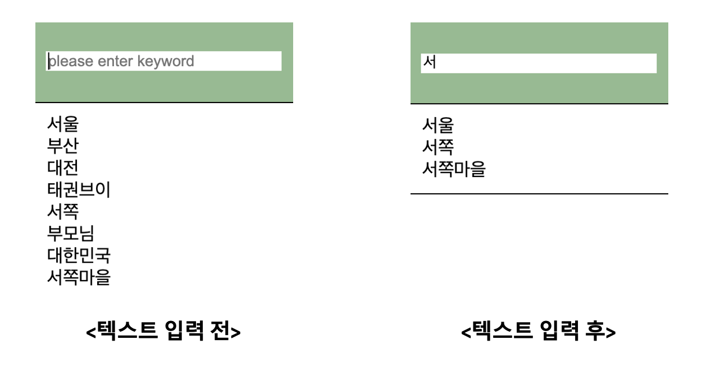

키보드 이벤트를 지연시간(debounce 기능)을 통해 request 횟수를 줄인다.

디자인 템플릿을 변경할 수 있도록 템플릿을 분리한다.
Q. 검색어를 입력하는 동시에 엔터키, 검색 버튼 누를 필요 없이 결과값을 즉시 반영할 수 있는 순간 검색 기능을 구현하십시오.
키보드 이벤트를 지연시간(debounce 기능)을 통해 request 횟수를 줄인다.
디자인 템플릿을 변경할 수 있도록 템플릿을 분리한다.

npm install
Run npm install
excution
Run npm run dev
q1. configuration을 참고하여 input element를 생성하시오. (기능과 디자인을 분리하기 위한 방법, src->question->instant-search->index.js)
q2. debounce 기능을 구현하시오. (src->question->instant-search->util->index.js)
q3. debounce 기능을 통해 가져온 데이터를 외부로 전달한다. (src->question->instant-search->index.js)
q4. Promise를 사용하여 검색 키워드에 맞는 데이터를 가져와 리스트를 출력하시오. (src->question->instant-search->mock->word->index.js / src->index.js)